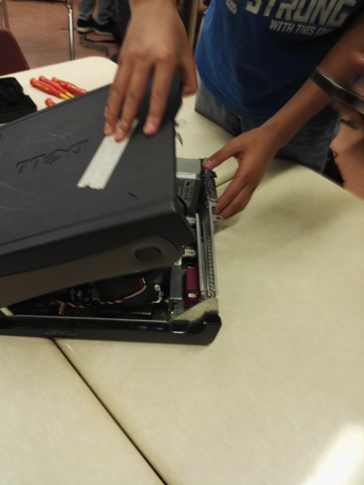

A project by Melissa, Erica, Daniel, and Kevin
For this project, we took an old computer system unit, dissected it, and then reassembled it so it looked as if it's never been touched. We took a lot of pictures along the way, noting the specific components of the unit, their purposes, and how they all worked together to form a cohesive machine (what)
See how we opened up and reassembled our computer from start to finish! See how we took out the power supply, detached parts from the motherboard, ejected the disk drives, and more. Keep reading.
Learn more about the functions of each individual part and how they work together to make the computer run. Keep reading.
BIOS Basics - BIOS Central (2017). Retrieved 6 June 2017 from http://www.bioscentral.com/misc/biosbasics.htm
Computer Cooling Fans (2014). Retrieved 6 June 2017 from http://www.nmbtc.com/fans/computer-cooling-fans/
CPU (2017). Retrieved 6 June 2017 from https://www.computerhope.com/jargon/c/cpu.htm
Hard Drive (2017). Retrieved 6 June 2017 from https://www.computerhope.com/jargon/h/harddriv.htm
How RAM Works (2000). Retrieved 6 June 2017 from http://computer.howstuffworks.com/ram.htm
Internal Computer Hardware (2017). Retrieved 6 June 2017 from http://openbookproject.net/courses/intro2ict/hardware/internal.html
What is a Hard Drive? - Types, Function and Definition (2017). Retrieved 6 June 2017 from http://study.com/academy/lesson/what-is-a-hard-drive-types-function-definition.html
What is a Motherboard? - Definition, Function and Diagram (2017). Retrieved 6 June 2017 from http://study.com/academy/lesson/what-is-a-motherboard-definition-function-diagram.html
What is a Power Supply Unit? (2017). Retrieved 6 June 2017 from https://www.lifewire.com/power-supply-unit-2618158
What is a Sound Card? (2017). Retrieved 6 June 2017 from https://www.computerhope.com/jargon/s/souncard.htm
What is a Video Card? (2017). Retrieved 6 June 2017 from https://www.lifewire.com/what-is-a-video-card-2618161